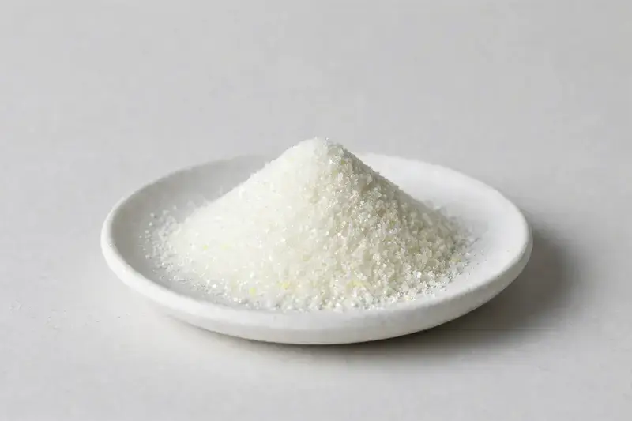

Vinpocetine — a semi-synthetic vincamine derivative positioned for cognitive-focus and nootropic-style formulations.

Overview
Vinpocetine Powder is a semi-synthetic derivative of vincamine, an alkaloid associated with Vinca minor. It is widely traded as a white crystalline powder, commonly at 99% purity by HPLC, and appears in capsule and tablet concepts positioned around cognitive focus. Formulators value a tight assay and clean chromatographic profile. HerbChina Extracts is a Xi'an-based trading company sourcing through vetted partner producers; buyers share a target spec and we confirm feasibility honestly.
Specifications below reflect commonly requested options in the market — not a stock list. Share your target spec and we'll confirm exactly what we can supply, honestly.
| Specification | Details |
|---|---|
| Botanical identity | Vinpocetine (vincamine derivative) powder |
| Marker compound | Commonly requested spec grades: 99% by HPLC; lower assays such as 98% are also seen in the market |
| Appearance | White to slightly yellow fine powder |
| Mesh size | Typically 80–100 mesh (confirm per inquiry) |
| Testing | COA/TDS arranged on request; scope agreed per your spec |
Applications
Documentation
We don't claim in-house labs or certifications we don't hold. COA and TDS documents can be arranged on request, and testing scope is agreed against your specification before supply.
FAQ
Related products
Silybum marianum
Key marker: Silymarin
View specs →Ginkgo biloba
Key marker: Flavone Glycosides
View specs →Panax ginseng
Key marker: Ginsenosides
View specs →Chromium picolinate
Key marker: 12%+ chromium
View specs →D-Biotin
Key marker: 99%+ D-Biotin
View specs →Send your target spec and volumes — we'll respond with a tailored quotation.
Request a Quote